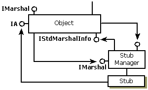
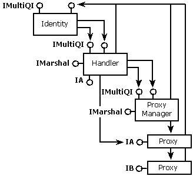

If the server wants to include some extra data in the packet for the handler to use, the server must implement both the IMarshal and the IStdMarshalInfo interfaces. The server must aggregate the standard marshaler and must delegate the first part of the marshaling to the aggregated standard marshaler, including IMarshal::GetUnmarshalClass, and must add its own data size to the size returned by the standard marshaler's IMarshal::GetMarshalSizeMax. The standard marshaler calls IStdMarshalInfo::GetClassForHandler to get the CLSID of the handler to be created. After the standard marshaler has done its marshaling, the server then writes its own extra data into the stream. The resulting structures, with extra data in the stream, are shown in the following illustration:

This allows the call from COM to CoUnmarshalInterface on the client side the ability to skip over any unread data and leave the stream in the appropriate position following all the marshaled interface data if the handler cannot be created.
As in the case where there is no extra server data in the stream, the client-side COM call to CoUnmarshalInterface will create the identity and handler. The handler must implement IMarshal and must delegate the IMarshal calls to the aggregated standard marshaler first and then marshal or unmarshal any extra data that the server provided. The handler's UnmarshalInterface will be called for every unmarshal, regardless of whether it has unmarshaled the interface before or not. In this case, the server does not call CoGetStdMarshalEx but the handler must. The resulting client-side structure is shown in the following illustration.

The Lightweight Client-Side Handler
Â
Â